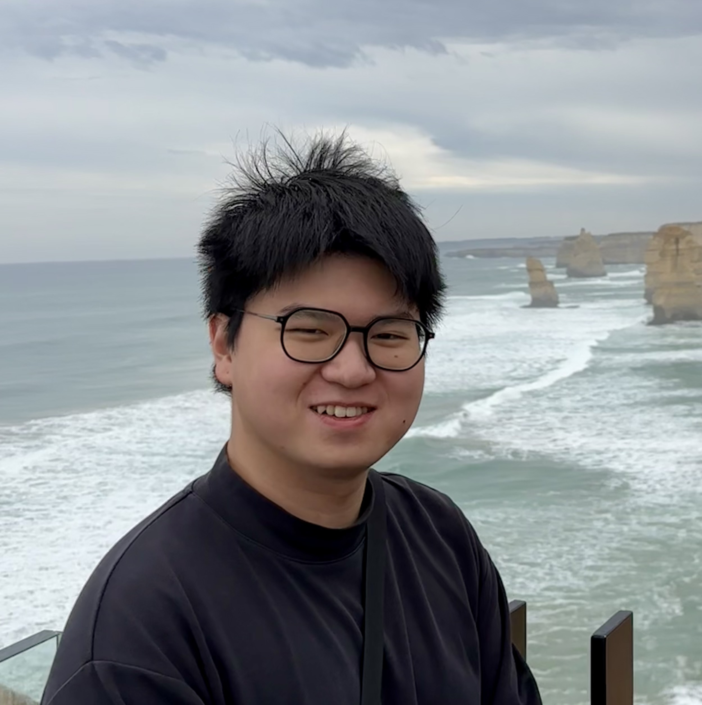
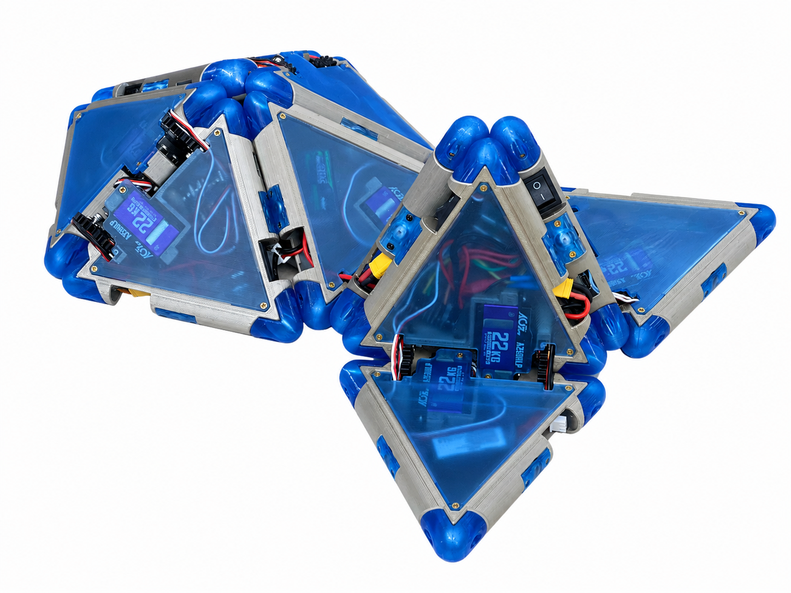
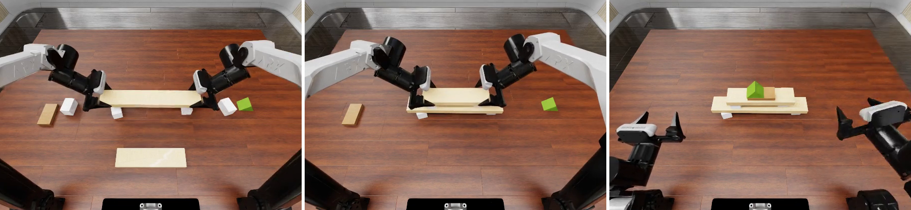

Junyan Liu
Mechanical Engineering — Robotics and Control
MS student at Columbia University
I am an MS student in Mechanical Engineering (Robotics and Control Track) at Columbia University. My background is in mechatronic engineering — a dual degree between Beijing Jiaotong University and the University of Wollongong, where coursework in embedded systems, finite element analysis, and control theory first drew me toward robotics.
I currently conduct research in Prof. Hod Lipson's Creative Machines Lab, working on the control systems and simulation infrastructure for self-reproducing modular robots — research presented at two IROS 2026 workshops. In Prof. Yunzhu Li's RoboPIL Lab, I built lightweight World Action Models for robotic manipulation (June–November 2026). I also serve as a Teaching Assistant for Mechatronics & Embedded Micro at Columbia, and have built robots including a quadruped platform ("Pack-Pack") and a computer-vision tracking robot that won Best Use of Computer Vision at the MakeCU 2025 Hackathon.
Education
-
2025–Present
MS in Mechanical Engineering, Robotics and Control Track
Columbia University in the City of New York, New York, US
Coursework: Robotic Studio (Advanced), Robot Learning, Model Predictive Control, Introduction to Robotics.
-
2024–2025
BE in Mechatronic Engineering (Honours)
University of Wollongong, Wollongong, AU
Coursework: Applied Topics in Mechatronics, Reliability Engineering, Manufacturing Engineering Principles.
-
2021–2025
BE in Mechatronic Engineering
Beijing Jiaotong University, Beijing, CN
Coursework: Electronics, Programming for Engineers, Embedded System and Applications.
Publications
Research
My interests sit at the intersection of mechanical design, control, and simulation — currently focused on world models and learning-based control for robotic manipulation, and on physical self-reproducing and self-reconfiguring modular robots. Below is my research at Columbia; earlier research is in my CV.
-
Feb 2026–Present
Replicate Project: Self-Reproducing Modular Robots
Creative Machines Lab, Prof. Hod Lipson

- Co-developed the ESP32/ESP-NOW control stack for a 15-module self-reproducing robot, synchronizing modules across 5-module "seal" and 3-module "trilobite" morphologies.
- Independently designed its locomotion, module-carrying, and budding sequences and its manual-control interface.
- Independently built a closed-loop vision system (OpenCV, ArUco) that steers the robot to dock, achieving fully autonomous collection of all scattered modules in physical trials.
- Engineered a custom magnetic physics engine for MuJoCo (O(N²) model with distance attenuation and damping) whose docking-force parameters were adopted for the physical docking interface.
- Migrated simulation to MuJoCo/MJX and wrote a C library injecting forces directly into MuJoCo's low-level arrays, achieving a 2.34× per-step speedup for large-scale evolutionary search.
-
Jun 2026–Nov 2026
Lightweight World Action Models for Robotic Manipulation
RoboPIL Lab, Prof. Yunzhu Li (mentored by PhD student Kaifeng Zhang)

- Independently carried out this project end to end, moving from MPPI baselines (Franka grasping in Newton, task planning in RoboCasa) to learned World Action Models (WAMs) built on the Interactive World Simulator (IWS).
- On Push-T, benchmarked WAMs on frozen IWS dynamics against Diffusion Policy, a 450M SmolVLA, and a scaled-down VPP2; the best matched SmolVLA (171 vs. 172 of 250 episodes); perception was the main bottleneck.
- On RoboDojo (Isaac Sim), collected 11.9M frames (31k episodes) of interaction data, trained IWS from scratch on it, and reproduced VPP2 (14B video + 2B action) within leaderboard noise on three tasks.
- Built a lightweight WAM (a DiT flow-matching head on frozen IWS features) about half the size of SmolVLA; trained only on build_tower, it beat the single-task SmolVLA (12.0% vs. 0.7% success) but trails larger π0.5 and VPP2.
Earlier research (2024–2025) on magnetic simulation and reinforcement learning is in my full CV.
Selected projects
-
Sep–Dec 2025
Quadruped Robot "Pack-Pack" — Robotic Studio
Columbia University
- Designed and built a custom quadruped from concept sketches to physical deployment, using SolidWorks for 3D CAD and a Raspberry Pi controller driving 8 servo motors (2 DOF per leg).
- Built a MuJoCo simulation to evaluate preset gaits, Random Search, Hill Climbing, and Reinforcement Learning (RL), comparing models optimized for maximum speed and gait stability.
- Achieved sim-to-real transfer of policies optimized via Random Search and Hill Climbing, deploying them on the physical hardware to reach a stable walking speed of 26.47 cm/s.
-
Nov 2025
Google It: Computer-Vision Tracking Robot (MakeCU 2025 Hackathon)
4-person team, 24-hour hackathon
- Built a camera-guided mobile robot with a 4-person team in 24 hours, pivoting from a two-wheel self-balancing design (PID control via MPU6050 IMU) to three wheels when balance tuning proved infeasible.
- Implemented real-time ArUco tracking on a Raspberry Pi (OpenCV), computing proportional steering corrections from the marker's pixel offset to drive LX-16A bus-servo wheels toward the target.
- Integrated an HC-SR04 ultrasonic sensor for obstacle avoidance and an LED status indicator, halting the robot when an obstacle was detected or the target was lost.
- Diagnosed and fixed hardware failures under time pressure: burned-out motors, slipping wheels, and insufficient battery current (upgraded from 9V to 12V with a DC-DC converter).
- Won Best Use of Computer Vision at the hackathon.
Earlier projects (2023–2024), including a surgical planning system and a smart car challenge, are in my full CV.
Skills
- Robotics & simulation: MuJoCo/MJX, Isaac Sim, Newton, RoboCasa, OpenCV/ArUco
- Machine learning: PyTorch, JAX, World Models, Diffusion Policy/DiT, Reinforcement Learning, U-Net
- Programming & embedded systems: C/C++, Python, MATLAB, Arduino (ESP32), STM32
- Design & analysis: SolidWorks, AutoCAD, Photoshop, ANSYS Workbench, ANSYS Maxwell
Honors & Awards
- Winner, Best Use of Computer Vision — MakeCU 2025 Hackathon, Columbia University, Nov 2025. Selected from 19 projects by 115 registered participants at Columbia's flagship 24-hour hardware hackathon.
Teaching Experience
-
Fall 2026
Teaching Assistant — MECE4058E: Mechatronics & Embedded Micro
Columbia University (Instructor: Enrico Zordan)
- Mentor 40 students in 7 teams through weekly labs and office hours; grade lab work.
- Help students debug embedded microcontroller code (Assembly/C) and mechatronic hardware (solenoids, stepper/DC motors, thermal systems, magnetic levitation).
Earlier internship experience (2024–2025) is in my full CV.
Contact
I'm happy to talk about my research, share my CV, or answer any questions. The fastest way to reach me is email.
jl7293@columbia.edu